How Intune can let standard users change approved Windows network settings (EPM System Settings) without giving them local administrator rights.
| Network settings are now documented Microsoft now documents an Elevation system settings policy for Endpoint Privilege Management. The currently documented category is Network settings. It lets standard users change approved IPv4, IPv6, gateway, and DNS values through a controlled EPM experience that starts in Company Portal. |
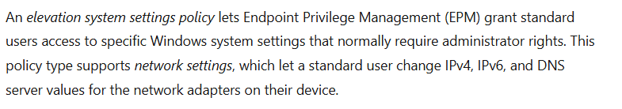
Introduction
Endpoint Privilege Management normally starts with a file. You define a rule for an executable, MSI, or PowerShell script, EPM matches that file, and the user can perform the required action without becoming a local administrator.
System settings are different. If a user needs to change a static IP address or DNS server, the real requirement is not to elevate some random executable. The requirement is to allow one Windows administration task and nothing more.
Microsoft now documents that model in Manage system settings with Endpoint Privilege Management. The supported experience starts with Network settings. Company Portal is the user entry point, EPM controls the request, and a dedicated helper opens the limited settings experience on the device.
That helper is EpmElevate.exe. It is an important part of this design because it shows how Microsoft separates the privileged task from the normal Windows Settings experience. The user does not launch it directly. EPM invokes it as part of the approved system settings workflow.
Why Windows system settings are harder to elevate with EPM
Traditional EPM works really well when the administrative task maps to a specific executable. If a user needs to run an installer or an administrative utility, EPM can identify that file and elevate only that process.
Modern Windows Settings does not fit that model nearly as well.
Changing something like a DNS server is not represented by a dedicated ChangeDns.exe that EPM can simply identify and elevate. The user works through the broader Windows Settings experience, while Windows handles the privileged configuration behind that interface.
That distinction matters. The Windows Settings application is a shared experience with many pages and administrative actions. Elevating that whole experience would be much broader than the one task the user actually needs to perform.
This is where EPM System Settings changes the model. Instead of trying to elevate the entire Windows Settings application, EPM creates a dedicated privileged surface for the approved task. For Network Settings, the user gets a purpose built interface for IPv4, IPv6, gateway, and DNS configuration while everything else remains outside that elevated experience.
And that is where EpmElevate.exe starts to make sense. The privilege follows the task, not the entire Settings application and not the user account.

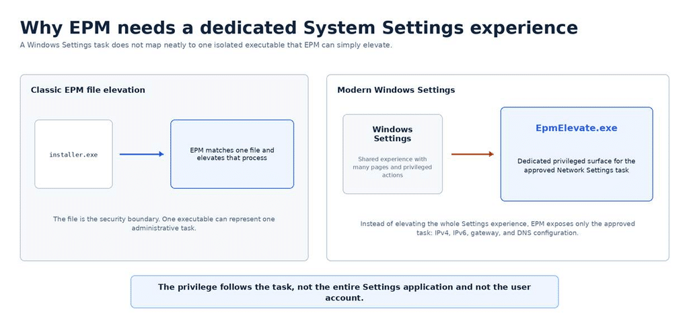
What Microsoft supports today
Microsoft currently documents Network settings. The policy lets a standard user configure IPv4, IPv6, gateway, and DNS server values for the device’s network adapters. The user can select automatic or manual configuration and enter the values required for the selected adapter.
The device also needs the normal EPM elevation settings policy that enables Endpoint Privilege Management. The system settings policy then defines which system settings experience is available.
Is the Network Settings UI out of the box?
Yes. From an administrator perspective, you don’t need to package and deploy a separate Network Settings application. Microsoft explicitly documents that the system settings experience works without a separate app deployment.
The Company Portal is the user entry point. Once EPM is enabled, the system settings policy is assigned, and the device has completed its next policy sync, Company Portal exposes the System settings tile under Help & support. Selecting Edit settings opens the dedicated Endpoint Privilege Management Network Settings experience.
So the UI is part of the EPM experience, not a custom utility IT needs to build. Company Portal still needs to be available on the device, but the Network Settings interface itself does not require a separate application deployment.
A practical example: changing network settings while offline
One of the best examples is a laptop moving between sites. The new network might require a static IP address or specific DNS servers before the device can get online. That creates an awkward problem for a standard user: the device cannot reach the network until the settings change, but the user usually needs administrator rights to make that change.
If the EPM policy is already on the device, the user can complete the approved network change locally. The user does not need to become a local administrator just to get the device onto the network.
How the EPM system settings flow works
Before we go into each part, here is the complete flow. Intune places the EPM and system settings policies on the device. Company Portal shows only the category with an assigned policy. The user opens System settings; EpmElevate.exe provides the dedicated Network Settings experience; the user makes the requested change, confirms it, completes any required validation, and EPM applies the approved change while the account remains a standard user.

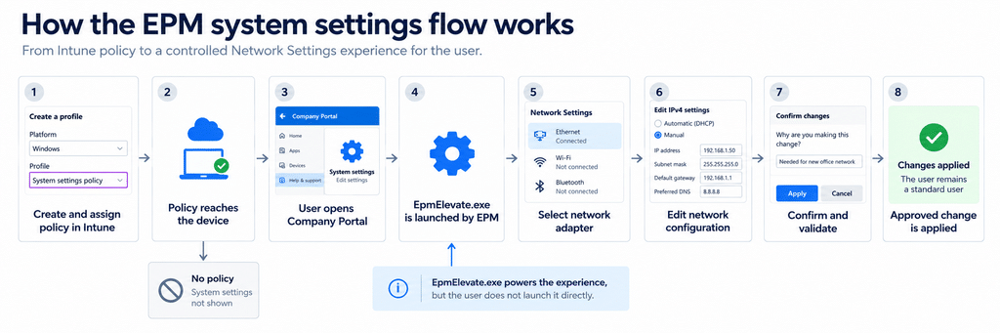
Step 1: Create the System settings policy in Intune
The flow starts in the Intune admin center under Endpoint security > Endpoint Privilege Management > Policies. Select Create Policy and choose Windows as the platform.
In my current Intune portal, the profile picker is labeled System settings policy, as shown below. Microsoft Learn currently refers to this policy type as Elevation system settings policy. This profile configures the EPM system settings experience.

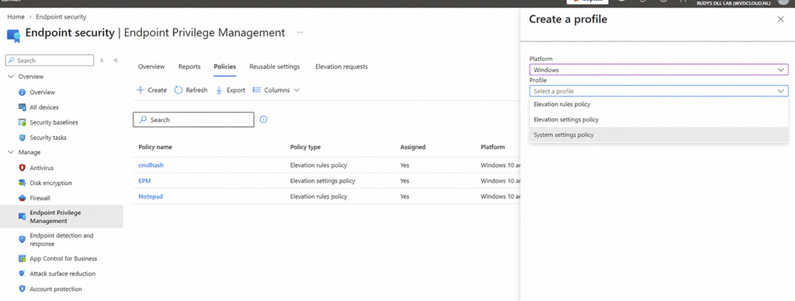
After creating the profile, name it and add an optional description. In Configuration settings, select Add and then Edit instance to open the rule properties. Give the rule a name, set System setting to Network settings, and set Elevation type to User confirmed.
Validation is optional. You can require Business justification, Windows authentication, or both. If you do not select either validation option, the user only needs to confirm the change before EPM applies it.
Finish the policy with Scope tags if needed, assign it to the required groups, and then review and create the profile. The device also needs the normal Elevation settings policy that enables EPM before the System settings policy can take effect.

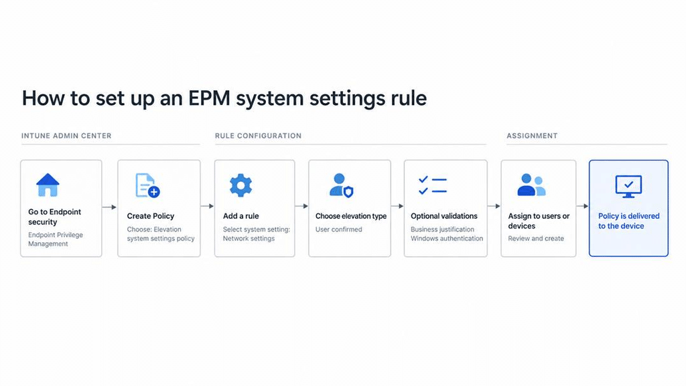
Step 2: EPM decides whether the system settings category should be exposed
The policy is what makes the experience available. EPM exposes only the settings categories that the device has a policy for. If there is no Network settings rule for the device, that category is not the task the user should be offered.
This is the first security boundary in the flow. Company Portal is not a generic launcher for privileged Windows tools. What the user can start is determined by the EPM System Settings policy.
Step 3: The user starts from Company Portal
After the device receives the policy, the user opens the Windows Company Portal. Under Help & support, System settings becomes the entry point for EPM-managed system settings.
The user selects Edit settings. There is no command line to remember, no shortcut to deploy, and no reason for the user to know that EpmElevate.exe exists. Company Portal is simply the front door.

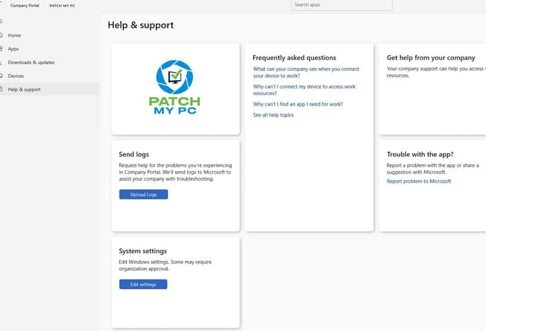

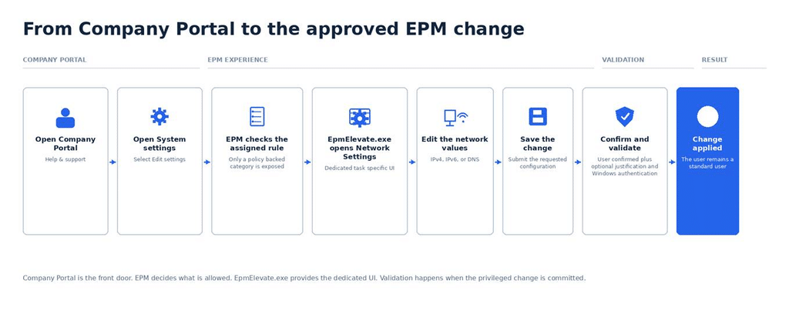
Step 4: EpmElevate.exe opens the dedicated EPM system settings experience
On the client, EpmElevate.exe is the helper behind the system settings UI. It is installed under C:\Program Files\Microsoft EPM Agent\EPMElevate\EpmElevate.exe.

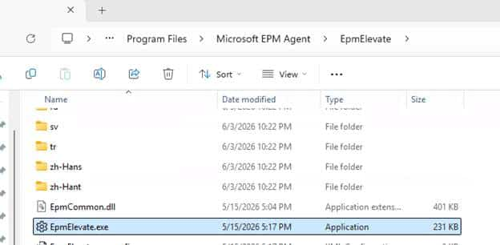
The important part is not simply that the executable exists. In my testing, launching it manually was not the intended path. The helper expects to be started through the EPM workflow so it runs with the corresponding policy and rule context.

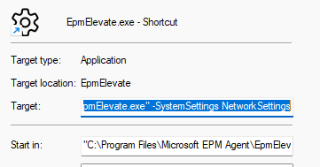
That is an important security detail. EpmElevate.exe is not a standalone elevation utility that a standard user can start to access privileged settings. EPM decides whether the task is allowed and then launches the helper in that approved context.
This is also why EpmElevate.exe is architecturally interesting. It gives EPM a task-specific privileged surface without elevating the whole Windows Settings experience.

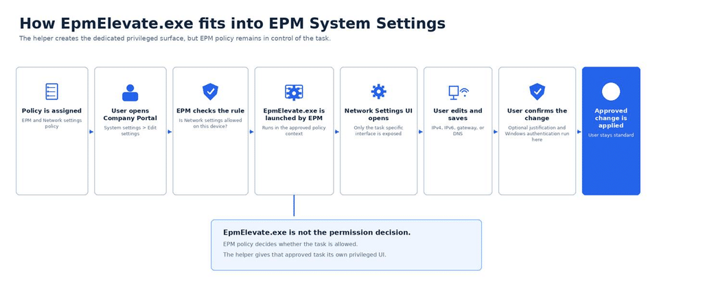
Step 5: The user selects the network adapter and setting to change
The Endpoint Privilege Management Network Settings window lists the adapters that are available on the device. The user selects an adapter such as Ethernet and works with the network values that are exposed in the EPM experience.

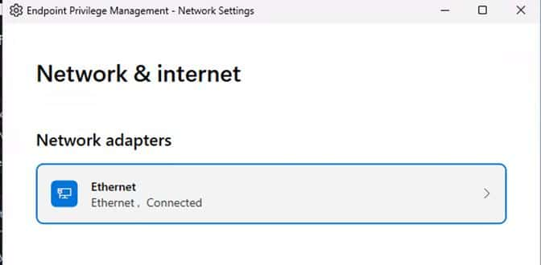
The user can choose IPv4, IPv6, or DNS and then select automatic or manual configuration. The important point is that this is a focused interface. The user is not being dropped into a full privileged Windows Settings session.

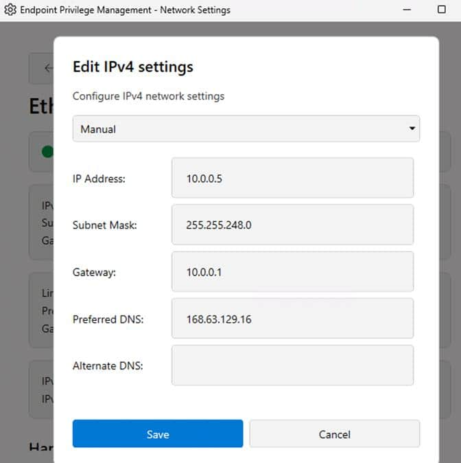
.
Step 6: The user saves the requested change
After entering the required values, the user selects Save. This is the point where the requested configuration is ready to be committed through EPM.
For IPv4, the documented experience includes values such as IP address, subnet mask, gateway, preferred DNS server, and alternate DNS server. IPv6 uses the corresponding IPv6 address, prefix length, gateway, and DNS values.
Step 7: EPM confirms the request and runs the required validation
The system settings rule uses User confirmed. Depending on how the administrator configured the rule, the user can also be required to enter a business justification, authenticate with Windows credentials, or do both before the change is applied.
The validation is tied to the actual privileged action. It is not just a prompt shown when Company Portal opens. If Business justification is required, that justification is also available for review through EPM reporting.
Step 8: The approved change is applied
Once the request satisfies the rule, EPM applies the approved network change. The user receives the privilege needed for that task, but the account remains a standard user.
That is the main value of the design. IT does not need to make the user a local administrator, expose a broader networking tool, or hand out a privileged script just to change a network value.

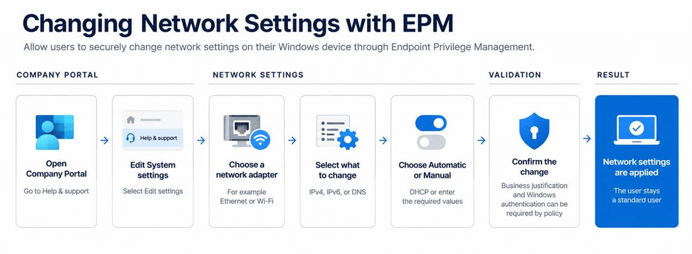
Why EpmElevate.exe matters
Microsoft could have reused the normal Windows Settings experience and somehow elevated the networking pages behind it. Instead, they built a dedicated EPM executable for the job.
EpmElevate.exe provides the privileged Network Settings experience itself. Company Portal is only the entry point; the EPM policy determines whether the user is allowed to make the change, and EpmElevate.exe presents the limited interface for changing IPv4, IPv6, and DNS settings.
The actual network configuration still ultimately relies on Windows networking components underneath, but the privileged user experience is no longer the normal Windows Settings app.
That is the important architectural difference. Instead of elevating a broad Windows Settings process, Microsoft created a purpose-built EPM helper for the specific administrative task. The privilege is therefore tied much more closely to the network configuration action rather than to the whole Settings application or the user account.
What about Time Sync System Settings?
The Time Sync work is interesting because it shows that Network Settings does not have to be a one off implementation.
The same model can be reused for other Windows settings that are difficult to handle with a traditional file based EPM rule. Microsoft can create another dedicated experience inside EpmElevate.exe, connect it to a System settings policy, and expose only that specific administrative task to the user. Time Sync appears to follow that pattern. The implementation I found is focused on Windows Time synchronization and NTP configuration, not simply giving users permission to manually change the system clock.

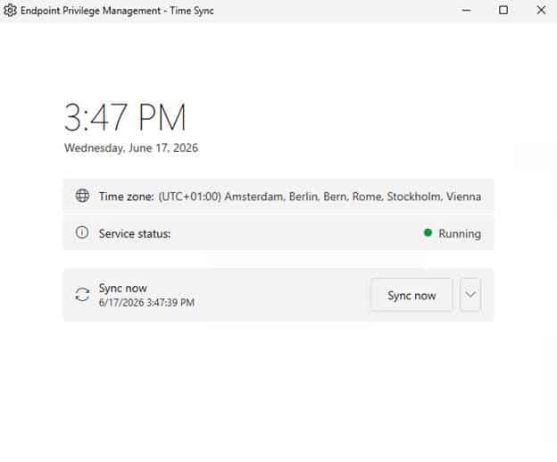
Microsoft does not currently document Time Sync in the public System settings policy, so Network Settings is the supported and documented capability today. But it does show where this architecture could go next.
Instead of asking which executable should EPM elevate?, Microsoft can keep adding purpose built System Settings experiences for individual Windows administration tasks.
Closing thoughts
EPM System Settings changes the way we should think about Endpoint Privilege Management. It is no longer only about finding the right executable to elevate.
With Network settings, Intune can approve the Windows task itself. Company Portal gives the user a simple place to start. EPM checks the policy. EpmElevate.exe opens the limited settings experience. The user changes only what is allowed and remains a standard user.